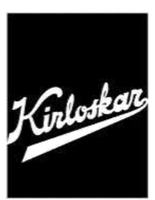

Est. 2009 · Jharsuguda, Odisha
Engineering reliability into every shift, every site, every ton moved.
KIPL keeps aluminum, steel, coal, and power operations across Odisha running — from mechanical fabrication and plant maintenance to mine-to-plant logistics that can't afford downtime.
What we stand on
Core values
-
01
Ethics
Integrity first
We believe ethics is the backbone of an establishment. We are uncompromising in our integrity, honesty, and fairness.
-
02
Health & Safety
People before output
Health is wealth and life is invaluable. We are relentless in keeping people safe from harm and providing a healthy work environment.
-
03
Quality
Right, the first time
We are passionate about excellence and doing our work right the first time. Our reputation depends on the value we deliver, in the eyes of every customer and community.
-
04
Sustainability
Built to last
We improve the quality of life in the communities where we work by respecting local cultures, engaging local people, and protecting the environment.
What we do
Six domains, one accountable partner.
-
01
Operation & Maintenance
The day-to-day activities that keep every system and piece of equipment performing reliably.
-
02
Project Execution
End-to-end delivery against engineering design standards and applicable codes.
-
03
Material Handling
Thoughtfully designed facility layouts and cost-effective flow management.
-
04
Mining & Logistics
A dependable, disciplined operation for high-volume mineral transportation.
-
05
Mechanised Cleaning
Advanced industrial housekeeping for facilities where cleanliness is non-negotiable.
-
06
Design & Consultation
Qualified engineers translating your requirements into practical, efficient designs.
Industries we keep moving
Built for critical industries.
How KIPL works
A disciplined approach. Measurable results.
-
01
Understand
Requirements, site conditions, operational constraints.
-
02
Engineer
Plan, design and prepare the right solution.
-
03
Mobilise
People, equipment, materials and systems.
-
04
Execute
Safe, disciplined, measurable delivery.
-
05
Sustain
Continuous operations, maintenance and improvement.
Trusted across industries
Our clients, our long-term partners.



The trajectory
Growing every year since day one.
Turnover has climbed from ₹36.27 Cr to ₹100.82 Cr over the last five years — and our workforce has scaled right alongside it, from 900 to 1,470 people.
since FY21–22
Let's talk about what your site needs.
Shutdown, maintenance, fabrication, logistics, engineering — tell us what you're looking to execute.